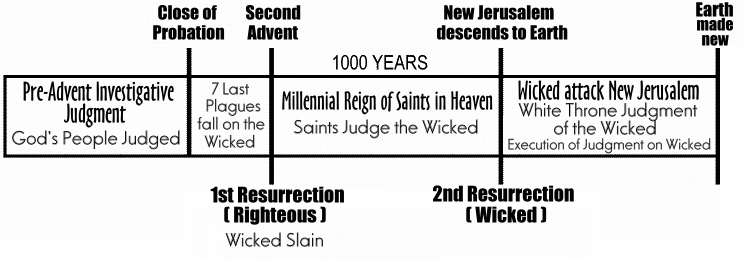

http://www.aloha.net/~mikesch/ |
THE BIBLICAL TRUTH ABOUT THE MILLENNIUM
Revelation is the only book of the Bible that specifically mentions a period of one thousand years, or millennium, in connection with the end of time. It is first mentioned in Chapter 20-
Rev 20:1 And I saw an angel come down from heaven, having the key of the bottomless pit and a great chain in his hand.
Rev 20:2 And he laid hold on the dragon, that old serpent, which is the Devil, and Satan, and bound him a thousand years,
Rev 20:3 And cast him into the bottomless pit, and shut him up, and set a seal upon him, that he should deceive the nations no more, till the thousand years should be fulfilled: and after that he must be loosed a little season.So at the very beginning of the 1000 years Satan will be restrained, or bound, unable to deceive anyone for the entire period.
Let's back up a little and see what immediately precedes the millennium-
Rev 19:11 And I saw heaven opened, and behold a white horse; and he that sat upon him was called Faithful and True, and in righteousness he doth judge and make war.
Rev 19:12 His eyes were as a flame of fire, and on his head were many crowns; and he had a name written, that no man knew, but he himself.
Rev 19:13 And he was clothed with a vesture dipped in blood: and his name is called The Word of God.
Rev 19:14 And the armies which were in heaven followed him upon white horses, clothed in fine linen, white and clean.
Rev 19:15 And out of his mouth goeth a sharp sword, that with it he should smite the nations: and he shall rule them with a rod of iron: and he treadeth the winepress of the fierceness and wrath of Almighty God.
Rev 19:16 And he hath on his vesture and on his thigh a name written, KING OF KINGS, AND LORD OF LORDS.This is an unmistakable description of the second coming of Jesus Christ as the KING OF KINGS, AND LORD OF LORDS. Look what is described as happening at the second coming-
Rev 19:17 And I saw an angel standing in the sun; and he cried with a loud voice, saying to all the fowls that fly in the midst of heaven, Come and gather yourselves together unto the supper of the great God;
Rev 19:18 That ye may eat the flesh of kings, and the flesh of captains, and the flesh of mighty men, and the flesh of horses, and of them that sit on them, and the flesh of all men, both free and bond, both small and great.
Rev 19:19 And I saw the beast, and the kings of the earth, and their armies, gathered together to make war against him that sat on the horse, and against his army.
Rev 19:20 And the beast was taken, and with him the false prophet that wrought miracles before him, with which he deceived them that had received the mark of the beast, and them that worshipped his image. These both were cast alive into a lake of fire burning with brimstone.
Rev 19:21 And the remnant were slain with the sword of him that sat upon the horse, which sword proceeded out of his mouth: and all the fowls were filled with their flesh.This describes all the wicked of the earth being slain at the second coming, and the destruction of the beast and false prophet. This event is also mentioned elsewhere in scripture as follows-
2 Th 2:8 And then shall that Wicked be revealed, whom the Lord shall consume with the spirit of his mouth, and shall destroy with the brightness of his coming:
(This was the beast of Rev 19:20)2 Th 2:9 Even him, whose coming is after the working of Satan with all power and signs and lying wonders,
(This was the false prophet of Rev 19:20)2 Th 2:10 And with all deceivableness of unrighteousness in them that perish; because they received not the love of the truth, that they might be saved.
2 Th 2:11 And for this cause God shall send them strong delusion, that they should believe a lie:
2 Th 2:12 That they all might be damned who believed not the truth, but had pleasure in unrighteousness.
(This was the rest of the wicked, who loved not the truth, the remnant of Rev 19:21)Psa 37:20 But the wicked shall perish, and the enemies of the LORD shall be as the fat of lambs: they shall consume; into smoke shall they consume away.
Psa 46:6 The heathen raged, the kingdoms were moved: he uttered his voice, the earth melted.
Psa 46:7 The LORD of hosts is with us; the God of Jacob is our refuge. Selah.
Psa 46:8 Come, behold the works of the LORD, what desolations he hath made in the earth.Psa 110:5 The Lord at thy right hand shall strike through kings in the day of his wrath.
Psa 110:6 He shall judge among the heathen, he shall fill the places with the dead bodies; he shall wound the heads over many countries.Isa 13:6 Howl ye; for the day of the LORD is at hand; it shall come as a destruction from the Almighty.
Isa 13:7 Therefore shall all hands be faint, and every man's heart shall melt:
Isa 13:8 And they shall be afraid: pangs and sorrows shall take hold of them; they shall be in pain as a woman that travaileth: they shall be amazed one at another; their faces shall be as flames.
Isa 13:9 Behold, the day of the LORD cometh, cruel both with wrath and fierce anger, to lay the land desolate: and he shall destroy the sinners thereof out of it.Isa 24:1 Behold, the LORD maketh the earth empty, and maketh it waste, and turneth it upside down, and scattereth abroad the inhabitants thereof.
Isa 24:2 And it shall be, as with the people, so with the priest; as with the servant, so with his master; as with the maid, so with her mistress; as with the buyer, so with the seller; as with the lender, so with the borrower; as with the taker of usury, so with the giver of usury to him.
Isa 24:3 The land shall be utterly emptied, and utterly spoiled: for the LORD hath spoken this word.
Isa 24:4 The earth mourneth and fadeth away, the world languisheth and fadeth away, the haughty people of the earth do languish.
Isa 24:5 The earth also is defiled under the inhabitants thereof; because they have transgressed the laws, changed the ordinance, broken the everlasting covenant.
Isa 24:6 Therefore hath the curse devoured the earth, and they that dwell therein are desolate: therefore the inhabitants of the earth are burned, and few men left.Isa 66:15 For, behold, the LORD will come with fire, and with his chariots like a whirlwind, to render his anger with fury, and his rebuke with flames of fire.
Isa 66:16 For by fire and by his sword will the LORD plead with all flesh: and the slain of the LORD shall be many.Jer 4:23 I beheld the earth, and, lo, it was without form, and void; and the heavens, and they had no light.
Jer 4:24 I beheld the mountains, and, lo, they trembled, and all the hills moved lightly.
Jer 4:25 I beheld, and, lo, there was no man, and all the birds of the heavens were fled.
Jer 4:26 I beheld, and, lo, the fruitful place was a wilderness, and all the cities thereof were broken down at the presence of the LORD, and by his fierce anger.
Jer 4:27 For thus hath the LORD said, The whole land shall be desolate; yet will I not make a full end.Jer 25:33 And the slain of the LORD shall be at that day from one end of the earth even unto the other end of the earth: they shall not be lamented, neither gathered, nor buried; they shall be dung upon the ground.
Zep 1:18 Neither their silver nor their gold shall be able to deliver them in the day of the LORD'S wrath; but the whole land shall be devoured by the fire of his jealousy: for he shall make even a speedy riddance of all them that dwell in the land.
Mal 4:1 For, behold, the day cometh, that shall burn as an oven; and all the proud, yea, and all that do wickedly, shall be stubble: and the day that cometh shall burn them up, saith the LORD of hosts, that it shall leave them neither root nor branch.
Mal 4:2 But unto you that fear my name shall the Sun of righteousness arise with healing in his wings; and ye shall go forth, and grow up as calves of the stall.
Mal 4:3 And ye shall tread down the wicked; for they shall be ashes under the soles of your feet in the day that I shall do this, saith the LORD of hosts.Mat 13:47 Again, the kingdom of heaven is like unto a net, that was cast into the sea, and gathered of every kind:
Mat 13:48 Which, when it was full, they drew to shore, and sat down, and gathered the good into vessels, but cast the bad away.
Mat 13:49 So shall it be at the end of the world: the angels shall come forth, and sever the wicked from among the just,
Mat 13:50 And shall cast them into the furnace of fire: there shall be wailing and gnashing of teeth.Luke 17:29 But the same day that Lot went out of Sodom it rained fire and brimstone from heaven, and destroyed them all.
Luke 17:30 Even thus shall it be in the day when the Son of man is revealed.So at the second coming, all the wicked living at the time will be slain. This is why Satan is restrained or bound for the 1000 years. He will have no one to deceive! The world will not have a living person left on it! This was also illustrated in the sanctuary service with the scapegoat-
Lev 16:21 And Aaron shall lay both his hands upon the head of the live goat, and confess over him all the iniquities of the children of Israel, and all their transgressions in all their sins, putting them upon the head of the goat, and shall send him away by the hand of a fit man into the wilderness:
Lev 16:22 And the goat shall bear upon him all their iniquities unto a land not inhabited: and he shall let go the goat in the wilderness.The scapegoat represented Satan, put into an uninhabited land, bearing all the sins of the world, which he is responsible for.
So, if the wicked are all dead, the earth barren but for Satan and his angels, then what of the righteous?
1 Th 4:16 For the Lord himself shall descend from heaven with a shout, with the voice of the archangel, and with the trump of God: and the dead in Christ shall rise first:
1 Th 4:17 Then we which are alive and remain shall be caught up together with them in the clouds, to meet the Lord in the air: and so shall we ever be with the Lord.First the righteous dead from all time will be raised from the grave, then the righteous living will be changed, and together all the righteous from all time with join with Jesus in the air. This is the rapture you hear so much about. Please note that no one living is left on earth to wonder what just happened. The wicked are all dead, and the righteous have met the Lord Jesus Christ in the air. What happens next? Let's return to Rev 20 for the answer-
Rev 20:4 And I saw thrones, and they sat upon them, and judgment was given unto them: and I saw the souls of them that were beheaded for the witness of Jesus, and for the word of God, and which had not worshipped the beast, neither his image, neither had received his mark upon their foreheads, or in their hands; and they lived and reigned with Christ a thousand years.
The righteous will live and reign with Jesus in heaven for the period of 1000 years, and judge the wicked. How do I know this happens in heaven and not on earth? Good question-
John 14:2 In my Father's house are many mansions: if it were not so, I would have told you. I go to prepare a place for you.
John 14:3 And if I go and prepare a place for you, I will come again, and receive you unto myself; that where I am, there ye may be also.At the second coming Jesus returns to earth to gather the righteous, that they may return with him to live in heaven in the mansions He has made for us.
So for the 1000 years, the books of all the wicked dead are open and available to the righteous, that they may be reviewed and judged. Now back to Rev 20-
Rev 20:5 But the rest of the dead lived not again until the thousand years were finished. This is the first resurrection.
Rev 20:6 Blessed and holy is he that hath part in the first resurrection: on such the second death hath no power, but they shall be priests of God and of Christ, and shall reign with him a thousand years.Clearly there are two resurrections. The first happened at the second coming and consisted of the righteous from all time, and they live with God in heaven for 1000 years. These people are immune from the second death, the fate of the wicked.
At the close of the 1000 years, Jesus and all the saints return in the New Jerusalem to earth-
Jude 1:14 And Enoch also, the seventh from Adam, prophesied of these, saying, Behold, the Lord cometh with ten thousands of his saints,
Jude 1:15 To execute judgment upon all, and to convince all that are ungodly among them of all their ungodly deeds which they have ungodly committed, and of all their hard speeches which ungodly sinners have spoken against him.Zec 14:4 And his feet shall stand in that day upon the mount of Olives, which is before Jerusalem on the east, and the mount of Olives shall cleave in the midst thereof toward the east and toward the west, and there shall be a very great valley; and half of the mountain shall remove toward the north, and half of it toward the south.
Rev 20:7 And when the thousand years are expired, Satan shall be loosed out of his prison,
How is Satan loosed at the end of the 1000 years? There is the second resurrection at the end of the of the 1000 years of all the wicked of the world, to ultimately face the execution of judgment, and perish in the second death. Satan again has wicked people to deceive! And what does Satan do when he is loosed?-
(The New Jerusalem [Rev 3:12] with all the saints inside, will have come to rest in the newly formed valley caused by the splitting of the mount of Olives.)
Rev 20:7 And when the thousand years are expired, Satan shall be loosed out of his prison,
Rev 20:8 And shall go out to deceive the nations which are in the four quarters of the earth, Gog and Magog, to gather them together to battle: the number of whom is as the sand of the sea.
Rev 20:9 And they went up on the breadth of the earth, and compassed the camp of the saints about, and the beloved city: and fire came down from God out of heaven, and devoured them.Satan will lead the wicked in assaulting the New Jerusalem, in the final battle of Armageddon, but he will not succeed in taking the city.
Rev 20:12 And I saw the dead, small and great, stand before God; and the books were opened: and another book was opened, which is the book of life: and the dead were judged out of those things which were written in the books, according to their works.
Rev 20:13 And the sea gave up the dead which were in it; and death and hell (the grave) delivered up the dead which were in them: and they were judged every man according to their works.Notice that the dead are being judged by their works? This is speaking of the spiritually dead, being judged by their works, since they lacked a saving faith in Jesus Christ.
Rom 14:11 For it is written, As I live, saith the Lord, every knee shall bow to me, and every tongue shall confess to God.
Rom 14:12 So then every one of us shall give account of himself to God.At this time even the wicked will acknowledge the righteousness of God's judgment regarding them and confess him as God. With the conclusion of the "Great White throne judgment of the wicked" the sentence of the second death is carried out upon the wicked-
Rev 20:10 And the devil that deceived them was cast into the lake of fire and brimstone, where the beast and the false prophet are, and shall be tormented day and night for ever and ever.
Rev 20:14 And death and hell were cast into the lake of fire. This is the second death.
Rev 20:15 And whosoever was not found written in the book of life was cast into the lake of fire.After Satan is cast into the lake of fire, he will exist no more.
After death is cast into the lake of fire, it will exist no more.
After hell (the grave) is cast into the lake of fire, it will exist no more.
After the wicked are cast into the lake of fire, they will exist no more.
That is the second death. Non-existance, or obliteration.Oh, but you say, verse 10 says torment for ever and ever not obliteration. The word translated as forever in this verse is listed in Strong's as follows-
65. aion, ahee-ohn'; from the same as G104; prop. an age; by extens. perpetuity (also past); by impl. the world; spec. (Jewish) a Messianic period (present or future):--age, course, eternal, (for) ever (-more), [n-]ever, (beginning of the, while the) world (began, without end). Comp. G5550.
We get the word eon from it. Eon is used in geology to specify an indeterminate period of time, an age, but an eon does have a beginning and an end. It is not necessarily the eternity that Rev 20:10 would seem to indicate. Need more proof? Note the following passage in Ezekiel, where Satan's fate is quite clear-
Ezek 28:13 Thou hast been in Eden the garden of God; every precious stone was thy covering, the sardius, topaz, and the diamond, the beryl, the onyx, and the jasper, the sapphire, the emerald, and the carbuncle, and gold: the workmanship of thy tabrets and of thy pipes was prepared in thee in the day that thou wast created.
Ezek 28:14 Thou art the anointed cherub that covereth; and I have set thee so: thou wast upon the holy mountain of God; thou hast walked up and down in the midst of the stones of fire.
Ezek 28:15 Thou wast perfect in thy ways from the day that thou wast created, till iniquity was found in thee.
Ezek 28:16 By the multitude of thy merchandise they have filled the midst of thee with violence, and thou hast sinned: therefore I will cast thee as profane out of the mountain of God: and I will destroy thee, O covering cherub, from the midst of the stones of fire.
Ezek 28:17 Thine heart was lifted up because of thy beauty, thou hast corrupted thy wisdom by reason of thy brightness: I will cast thee to the ground, I will lay thee before kings, that they may behold thee.
Ezek 28:18 Thou hast defiled thy sanctuaries by the multitude of thine iniquities, by the iniquity of thy traffic; therefore will I bring forth a fire from the midst of thee, it shall devour thee, and I will bring thee to ashes upon the earth in the sight of all them that behold thee.
Ezek 28:19 All they that know thee among the people shall be astonished at thee: thou shalt be a terror, and never shalt thou be any more.This passage relates the fate of Satan, to be consumed by fire and reduced to ashes, and he shall never be any more. This happens in the lake of fire of Revelation 20. So clearly, Hell as taught by the Roman Catholic Church, and most of Christianity does not exist. Satan will not rule in a place called Hell, he will be destroyed by God and so will all the wicked!
And then what?
Rev 21:1 And I saw a new heaven and a new earth: for the first heaven and the first earth were passed away; and there was no more sea.
Rev 21:2 And I John saw the holy city, new Jerusalem, coming down from God out of heaven, prepared as a bride adorned for her husband.
Rev 21:3 And I heard a great voice out of heaven saying, Behold, the tabernacle of God is with men, and he will dwell with them, and they shall be his people, and God himself shall be with them, and be their God.
Rev 21:4 And God shall wipe away all tears from their eyes; and there shall be no more death, neither sorrow, nor crying, neither shall there be any more pain: for the former things are passed away.
Rev 21:5 And he that sat upon the throne said, Behold, I make all things new. And he said unto me, Write: for these words are true and faithful.The earth made new will be the dwelling place of God and His people for eternity!
So, as a result of this study, it should be clear that anyone who advocates that Jesus will reign on this earth for the millennium, and that the rapture will leave living people on the earth to endure seven years of tribulation / antichrist, have no case. Scripture clearly describes a barren desolate planet after the rapture of the church, where the wicked dead are left unburied and Satan is left to contemplate his rebellion against God for 1000 years. That IS the Biblical truth about the millennium that so very few churches teach today. 
|
http://www.aloha.net/~mikesch/ |